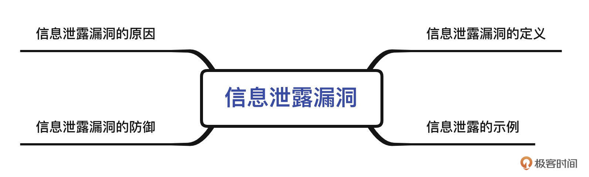
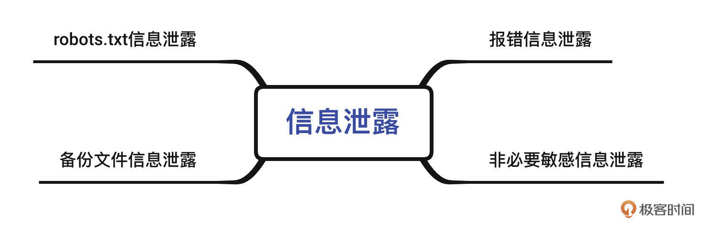
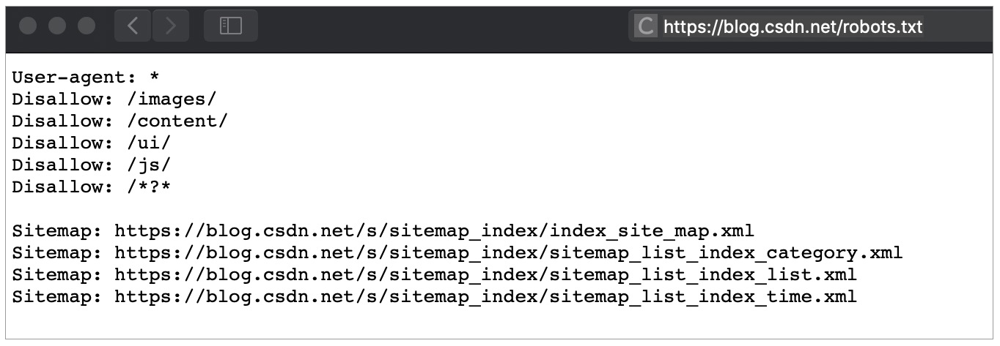
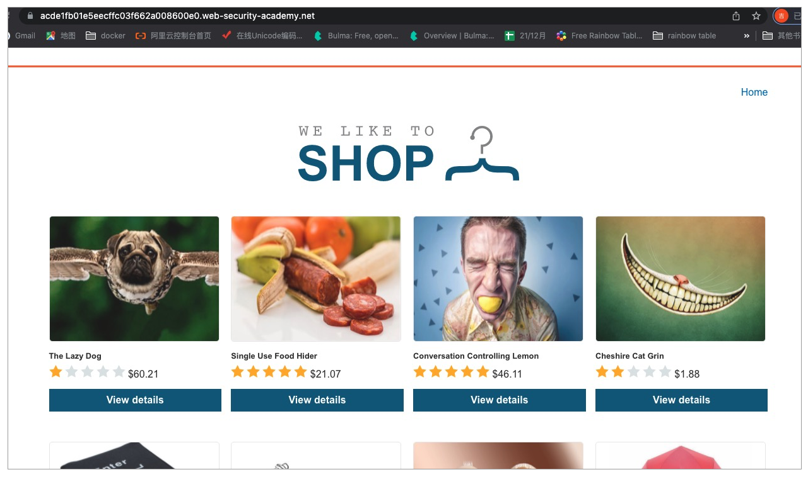
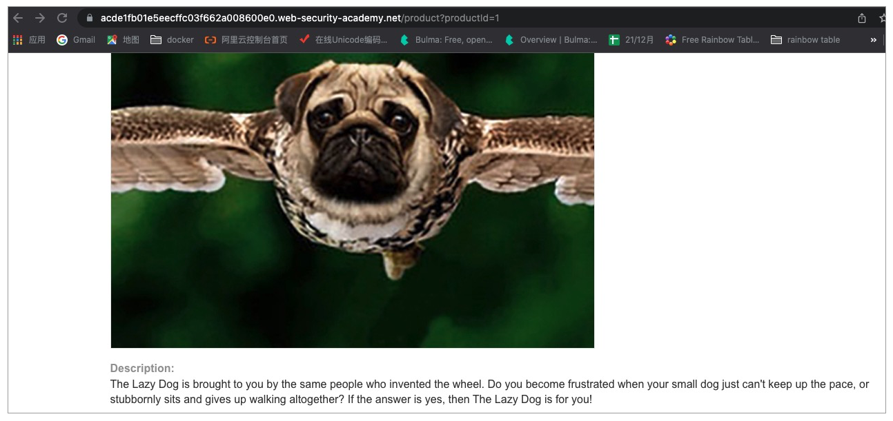
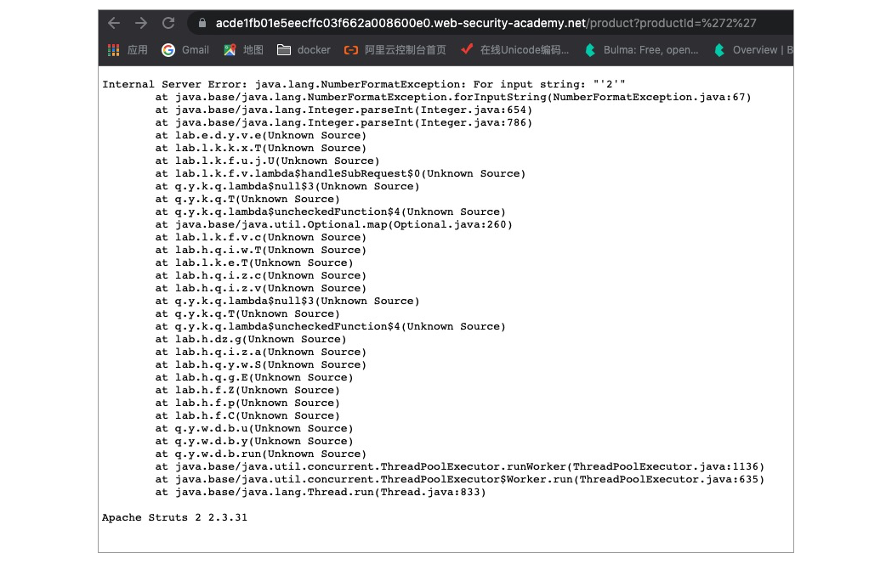
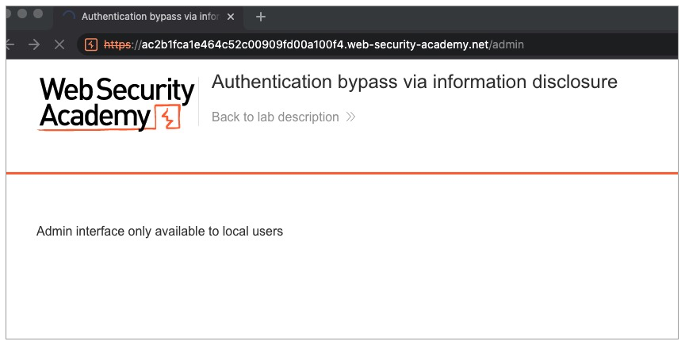
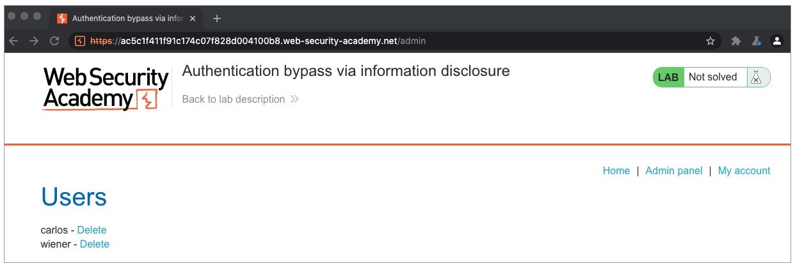

- 00 导读 解读OWASP Top10 2021.md
- 00 开篇词 从黑客的视角找漏洞，从安全的角度优雅coding.md
- 01 失效的访问控制：攻击者如何获取其他用户信息？.md
- 02 路径穿越：你的Web应用系统成了攻击者的资源管理器？.md
- 03 敏感数据泄露：攻击者如何获取用户账户？.md
- 04 权限不合理：攻击者进来就是root权限？.md
- 05 CSRF：为什么用户的操作他自己不承认？.md
- 06 加密失败：使用了加密算法也会被破解吗？.md
- 07 弱编码：程序之间的沟通语言安全吗？.md
- 08 数字证书：攻击者可以伪造证书吗？.md
- 09 密码算法问题：数学知识如何提高代码可靠性？.md
- 10 弱随机数生成器：攻击者如何预测随机数？.md
- 11 忘记加“盐”：加密结果强度不够吗？.md
- 12 注入（上）：SQL注入起手式.md
- 13 注入（下）：SQL注入技战法及相关安全实践.md
- 14 自动化注入神器（一）：sqlmap的设计思路解析.md
- 15 自动化注入神器（二）：sqlmap的设计架构解析.md
- 16 自动化注入神器（三）：sqlmap的核心实现拆解.md
- 17 自动化注入神器（四）：sqlmap的核心功能解析.md
- 19 失效的输入检测（上）：攻击者有哪些绕过方案？.md
- 20 失效的输入检测（下）：攻击者有哪些绕过方案？.md
- 21 XSS（上）：前端攻防的主战场.md
- 22 XSS（中）：跨站脚本攻击的危害性.md
- 23 XSS（下）：检测与防御方案解析.md
- 24 资源注入：攻击方式为什么会升级？.md
- 25 业务逻辑漏洞：好的开始是成功的一半.md
- 26 包含敏感信息的报错：将安全开发标准应用到项目中.md
- 27 用户账户安全：账户安全体系设计方案与实践.md
- 28 安全配置错误：安全问题不只是代码安全.md
- 29 Session与Cookie：账户体系的安全设计原理.md
- 30 HTTP Header安全标志：协议级别的安全支持.md
- 31 易受攻击和过时的组件：DevSecOps与依赖项安全检查.md
- 32 软件和数据完整性故障：SolarWinds事件的幕后⿊⼿.md
- 33 SSRF：穿越边界防护的利刃.md
- 34 Crawler VS Fuzzing：DAST与机器学习.md
- 35 自动化攻防：低代码驱动的渗透工具积累.md
- 36 智能攻防：构建个性化攻防平台.md
- 大咖助场 数字证书，困境与未来.md
- 春节策划（一） 视频课内容精选：Web渗透测试工具教学.md
- 春节策划（三） 一套测试题，看看对课程内容的掌握情况.md
- 春节策划（二） 给你推荐4本Web安全图书.md
- 结束语 无畏前行.md
26 包含敏感信息的报错：将安全开发标准应用到项目中
你好，我是王昊天。
在如今的信息时代里，个人隐私是非常重要的，我们每个人都会有自己的隐私信息，这些信息可能存在于日记本、手机或者Web应用的数据库中。其中如果Web应用中存在信息泄露漏洞，用户的隐私信息就有可能被攻击者获取到。那么攻击者是如何获取的呢？这节课我们就一起看看，顺便加强一下安全开发标准。
接下来我们将分为四个部分进行学习，这里包括信息泄露漏洞的定义、示例、原因及防御方案。

首先，让我们从最基础的定义开始。
信息泄露漏洞的定义
当攻击者恶意发起一些Web应用设计者预期之外的操作，使得Web应用无意的将一些敏感信息展示给攻击者，这就是信息泄露漏洞。这些敏感信息可能是其他用户的隐私信息、敏感的商业信息以及Web网站的技术细节。
其中，我们很容易知道，泄露用户的隐私信息和敏感的商业信息都是非常危险的，而Web网站的技术信息泄露其实也很重要，攻击者很可能会借助这些信息，实现对这个Web应用的恶意攻击行为。
信息泄露的示例
当然了，确实有很多种方式会导致信息泄露漏洞，我们不妨一起看几个示例吧。这里包括robots.txt 信息泄露、备份文件信息泄露、报错信息泄露以及非必要敏感信息展示等等。接下来我们逐一看下。

robots.txt信息泄露
在一些Web应用目录下，会存在一个名为robots.txt的文件，这个文件主要是用来限制整个站点的搜索引擎访问情况，即设置哪些内容可以被访问，哪些内容不可以被访问。如果在这个文件中，包含了用户不可见目录的信息、结构以及内容，那么攻击者就可以访问这个文件来获取这些隐私信息，这就是一个典型的信息泄露示例。
例如，在这个Web应用中的目录信息下，就存在images、content等不允许被访问的文件夹。

接下来，让我们继续学习备份文件引起的信息泄露。
备份文件信息泄露
Web应用管理者，在更新Web应用时，很可能会将网页内容进行备份。如果管理者出于方便考虑，直接将备份文件放到网站目录下，并且没有对它进行访问控制的设置，那么攻击者就可以直接访问这个文件名，来获取备份文件。
那么攻击者是如何知道Web应用可能存在的备份文件名的呢？事实上，攻击者也不知道具体的备份文件名，而是利用一个常见备份文件名的字典文件来进行枚举测试，如果备份文件名很简单，那么攻击者就很可能成功获取到备份文件。
为了让你更好地理解这个过程，我们一起看看下面这个备份文件字典示例：
/2022.zip
/a.zip
/old.zip
/web.zip
/1.zip
/a.zip
/2021.zip
/1.rar
......
我们可以看到，字典文件中列举了一些常见的备份文件名称，攻击者就是用它们去对攻击的Web应用进行测试。
攻击者如果获取到备份文件，那么他就可以获得网页的源代码，这使得他更容易对Web应用进行分析，从而实施自己的攻击行为。
下面，我们来看报错信息泄露，它的严重性可能会进一步升级。
报错信息泄露
我们知道，如果我们对Web应用进行错误的操作，那么就可能会得到一些报错信息，比如下面这个示例：

这是一个购物信息网站，里面有各种商品，我们可以选择自己感兴趣的商品点击View details进行观看。这里我对这条会飞的小狗很感兴趣，让我们一起看看它的详细信息吧。

从图中，我们已经看到这条飞狗的详细描述了。此外，我们还发现，这个Web应用是通过GET方式上传参数productId。为了让页面显示出报错信息，我们将productId的值改为一个字符类型例如App，这样页面就可能会出现参数类型错误。
可以看到，页面确实爆出来了很多错误信息。

这里错误页面中包含了很多的Java程序信息，它们都属于Web应用的技术细节。如果这些信息被泄露出去，那么会对网站的安全造成极大的威胁。
最后，让我们一起来看一个危险性没有那么强的非必要敏感信息泄露。
非必要敏感信息泄露
非必要敏感信息泄露就是，Web应用将一些较为敏感的信息非必要地展示给其他用户。
举一个简单的例子，就比如有个购物应用，我们需要向商家购买商品，按照道理商家只需要知道我们的地址信息、联系方式即可完成货物的发送，但是Web应用却将我们的身份证号码、银行卡账号都展示给了商家。对于商家而言这是非必要的信息，可是Web应用却将这些隐私信息展示给了他们。这就是非必要敏感信息泄露，它会对用户的账户安全产生威胁。
到这里，我们就学习完了信息泄露漏洞的示例，这让我们更加具体地了解了信息泄露漏洞的实际场景。接下来，让我们进一步分析这个可怕的漏洞产生的原因。
信息泄露漏洞的原因
信息泄露漏洞产生的方式多种多样，不过它可以分为三种类型。
第一种类型为，Web应用的开发者在开发时需要写入一些调试信息，来方便自己及他人的合作开发，这是正确的行为。但是部分开发者在将Web应用正式部署上线时，忘记将这些信息删除干净，导致用户可以看到这些信息，这就导致了信息的泄露。
第二种类型更加常见，它是由于Web应用的开发者没有正确的对Web页面进行配置。这使得在Web页面出现错误时，会详细的给用户展示出很多包含敏感信息的报错内容。我们在查看飞狗页面引起的报错中，就属于这种情况。
最后一种情况最为普遍，这是因为Web应用开发者的不安全设计所导致的，这么说可能会比较抽象，我们可以通过一个例子来理解。

这是一个设计上存在安全隐患的Web应用，我们用字典探测到它存在一个目录admin。于是访问上去发现，页面提示到这个页面仅允许本地用户访问，这句话就像一个间谍，它仿佛在告诉攻击者“只要伪装成本地用户就可以访问了”。
于是我们按照“间谍”的提示，尝试利用BurpSuite拦截这一请求，并利用添加配置 X-Custom-IP-Authorization: 127.0.0.1，将自己伪造成为本地用户，实现授权的限制。
GET /admin HTTP/1.1
Host: ac5c1f411f91c174c07f828d004100b8.web-security-academy.net
Cookie: session=A5X8EOtt3Wtp2QOAoWxnJYXfXd8NNWFm
Sec-Ch-Ua: "Chromium";v="95", ";Not A Brand";v="99"
Sec-Ch-Ua-Mobile: ?0
Sec-Ch-Ua-Platform: "macOS"
Upgrade-Insecure-Requests: 1
User-Agent: Mozilla/5.0 (Windows NT 10.0; Win64; x64) AppleWebKit/537.36 (KHTML, like Gecko) Chrome/95.0.4638.54 Safari/537.36
Accept: text/html,application/xhtml+xml,application/xml;q=0.9,image/avif,image/webp,image/apng,*/*;q=0.8,application/signed-exchange;v=b3;q=0.9
Sec-Fetch-Site: none
Sec-Fetch-Mode: navigate
Sec-Fetch-User: ?1
Sec-Fetch-Dest: document
Accept-Encoding: gzip, deflate
Accept-Language: zh-CN,zh;q=0.9
#我们自己添加的IP信息。
X-Custom-IP-Authorization: 127.0.0.1
Connection: close
将这个报文发送出去，我们可以发现，已经成功绕过授权机制了，获取到的页面如下：

可以看到，该页面列举出了一些用户的用户名信息，我们可以点击删除按钮，将它们删去。
这个授权绕过漏洞的根本原因就是信息泄露，所以应用开发者在设计Web应用时，需要避免隐私信息的泄露，否则很可能会对应用产生安全威胁。
那么在了解完一些信息泄露的原因后，我们就可以对症下药，学习如何防御信息泄露漏洞了。
信息泄露漏洞的防御
因为造成信息泄露的途径多种多样，所以我们很难全面的去做好对信息泄露漏洞的防御。不过我们还是要采取一些措施，来降低信息泄露漏洞的可能性。
首先，我们需要让所有的Web应用开发者知道什么是敏感信息，因为有些信息可能看起来很安全，没有什么危险之处，但事实上它的泄露会给应用造成极大的安全威胁。
其次，我们要做到让报错信息趋于通用化，而不是在报错信息中将一些关于应用运行方式的线索传递给攻击者。
最后，我们还要彻底地理解Web应用程序运行的配置信息以及安全执行策略，然后禁用掉其中不需要的功能，防止这些功能造成信息泄露问题。
总结
在这一讲中，我们学习了信息泄露漏洞相关的知识。
首先，我们学习了信息泄露漏洞的定义，了解到信息泄露漏洞就是攻击者恶意发起一些Web应用设计者预期之外的操作，使得Web应用无意的将一些敏感信息展示出来。
在明白了信息泄露漏洞的定义之后，我们看了一些信息泄露示例，值得一提的是那个飞翔的小狗示例，我们通过让页面输出报错信息，让Web应用将很多技术细节展示出来。而这些泄露示例，可以帮助我们更具体地理解信息泄露是怎么一回事。
之后，我们具体地分析了信息泄露漏洞产生的原因，并将这些原因归为三类。第一类为开发者对于调试信息的漏删，第二类为开发者没有对页面进行正确的配置，最后一类为开发者的不安全设计，它们都是信息泄露漏洞的罪魁祸首。
最后，我们学习了信息泄露漏洞的防御方案，知道了信息泄露漏洞是难以完全去除的，但是我们可以通过让开发者正确认知什么是敏感信息，将报错信息趋于通用化以及禁用不需要的功能来降低信息泄露漏洞发生的概率。
思考题
你觉得还有什么方法能帮助Web应用抵御信息泄露漏洞吗？
欢迎在评论区留下你的思考。如果觉得今天的内容对你有所帮助的话，也欢迎你把课程分享给其他同事或朋友，我们共同学习进步！
© 2019 - 2023 Liangliang Lee. Powered by gin and hexo-theme-book.